SMB
Instalação
- samba-ad
- krb5-config
Configuração
1º - Vamos configurar o nome de nossa máquina com o nome de nosso dominio em: (/etc/hostname)
berlin.alemanha.lab
2º - Agora configura a linha do local host em: (/etc/hosts)
berlin.alemanha.lab
2.1 - Faça um backup do arquivo smb.conf que está em: (/etc/samba/smb.conf)
3º - Após isso vamos configura nosso domínio usando:
- samba-tool domain provision --use-rfc2307 --interactive
4º - Despois de criar seu dominio vamos configurar o aquivo smb.conf que está em: (/etc/samba)
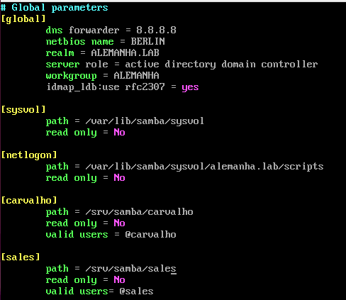
Nesse imagem mostra a configuração do compartilhamento de pasta com o windows, foram criadas duas pastas [Carvalho] e [sales]
5º - Agora vamos nos conctar ao domínio que criamos pelo windows vá em:

Clique em Alterar configurações 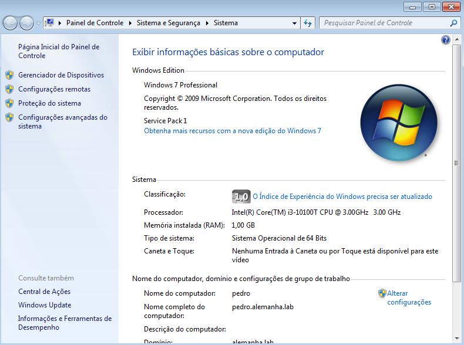
Depois em alterar, aparecerá uma tela menor, nela coloque o nome do computador e o domíno como está na imagem

6º - Para criar os usuários e grupos, estando na maquina windows pesquise sobre active directory e abra
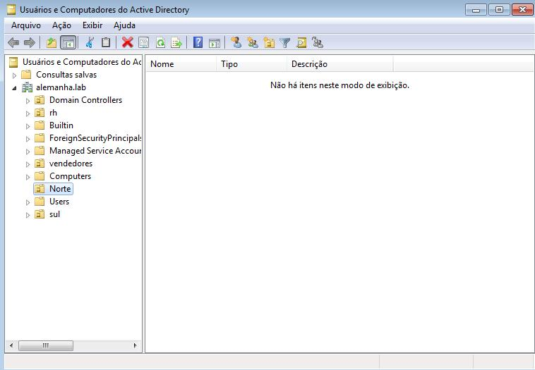
6.1º - A criação e assim: Novo -> Usuário 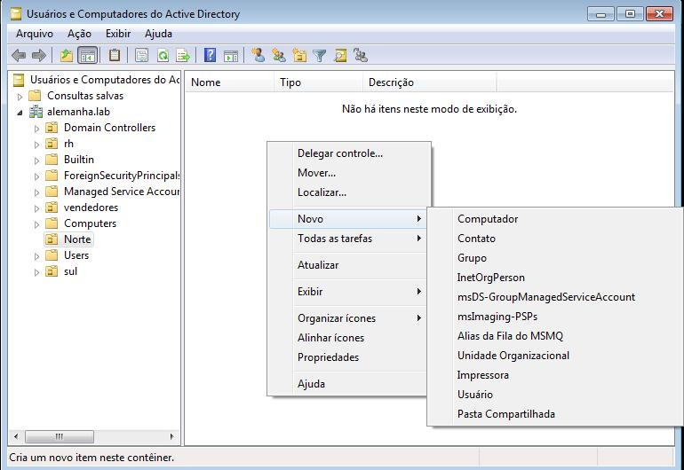
Insira as credenciais dele. 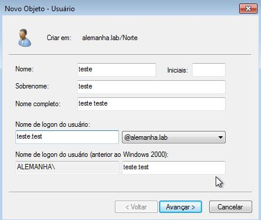
senha.. 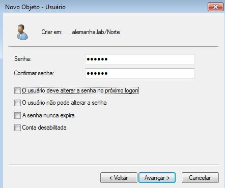
6.2 - Criação de grupos: Novo -> Grupos 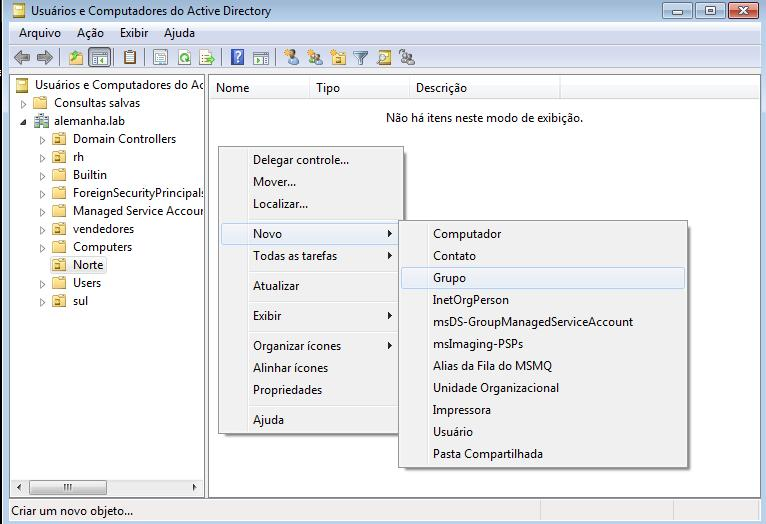
Insira o nome do grupo -> ok 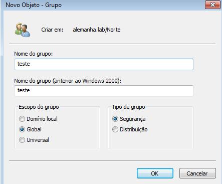
8º - Nessa imagem e possívei ver os grupos criados e seu usuários
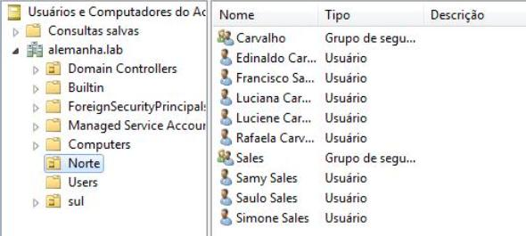
8.1 - Para adicionar usuário no grupo é assim: Seleciona o grupo -> vai na aba de mebros -> adicionar
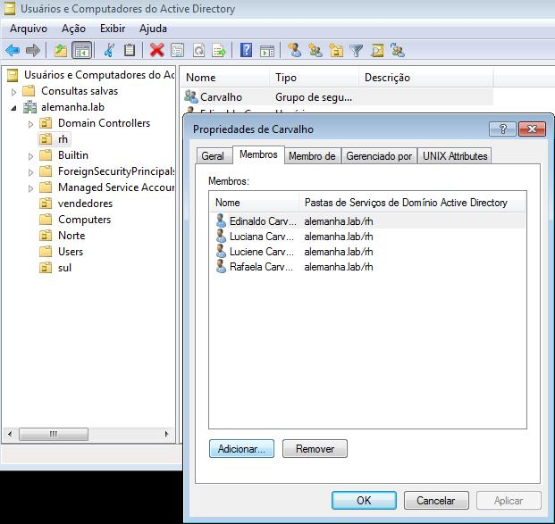
9º - Nessa etapa vemos que cada pessoa está em seu respectivo grupo
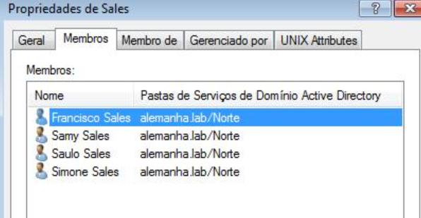 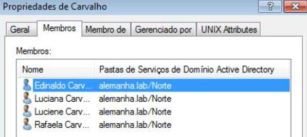 Alt text
Teste
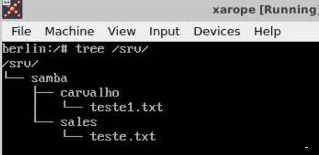 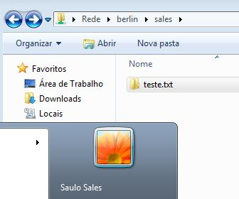 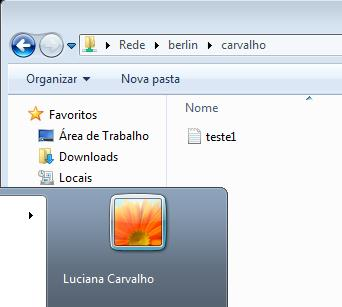